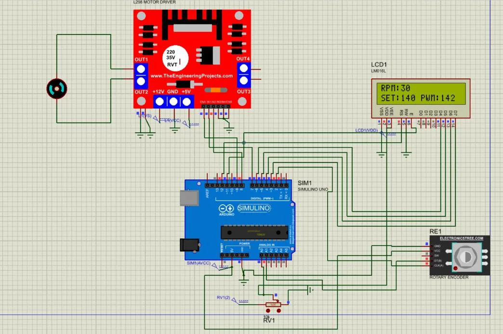

DC Motor Speed Control (PID)
Model a feedback loop that adjusts motor drive as the speed error changes.
I worked on the Arduino control code, encoder interrupt handling, and the Proteus interface for the motor driver and LCD.

From setpoint to drive
- 1. Set speed
The potentiometer supplies a target through A0.
- 2. Read input
Encoder channels use D2 (interrupt) and A1 (direction).
- 3. Update PID
The control loop runs every 500 ms and clamps the integral term.
- 4. Drive motor
D9 sends PWM to L298N ENA; D8 and D7 set direction.
The report’s Proteus schematic shows the LCD and separate logic and motor supplies. It describes the simulation wiring, not a bench wiring specification.
Step response
- Rise time
- ≈ 0.3 s
- Overshoot
- 6%
- Settling time
- ≈ 2.5 s
In the Proteus test, the controller reduced PWM for simulated overspeed and reached the maximum PWM command under simulated underspeed. The listing generates an RPM proxy from manual encoder input; it does not calculate shaft RPM from a calibrated encoder.
What I would validate next
Calculate physical RPM from calibrated pulses per revolution and sample time. Log repeatable setpoint and load steps, then measure rise time, overshoot, settling time, and steady-state error on the bench.